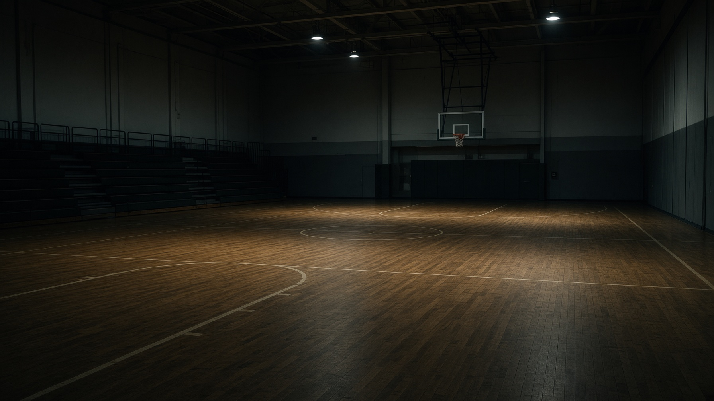
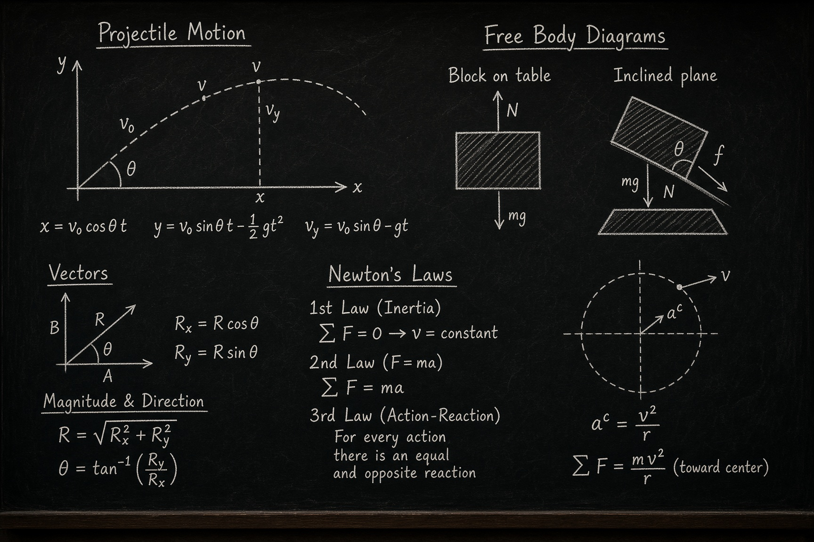
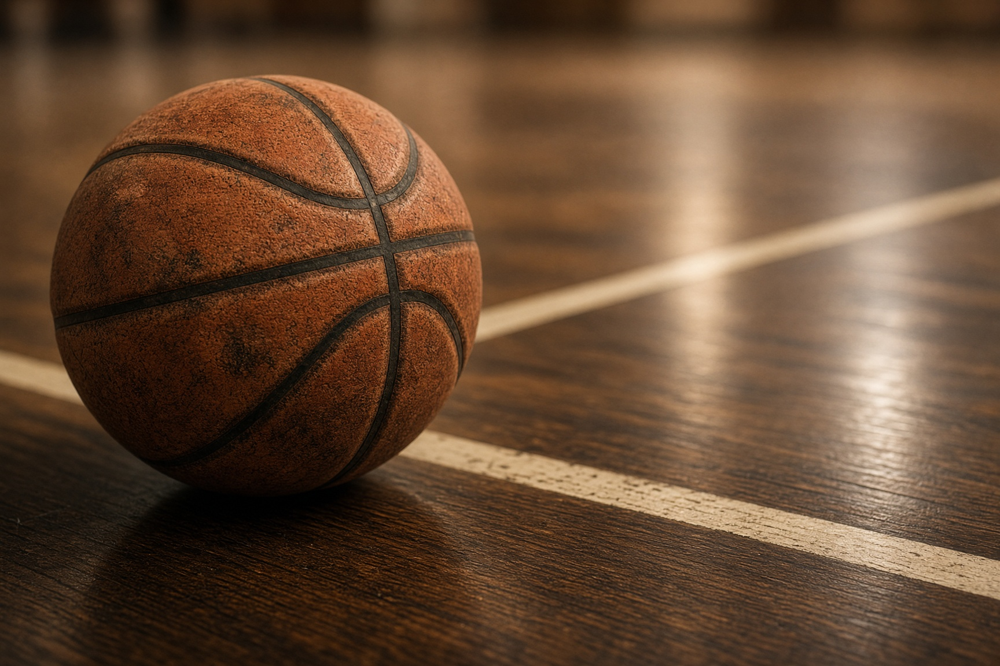
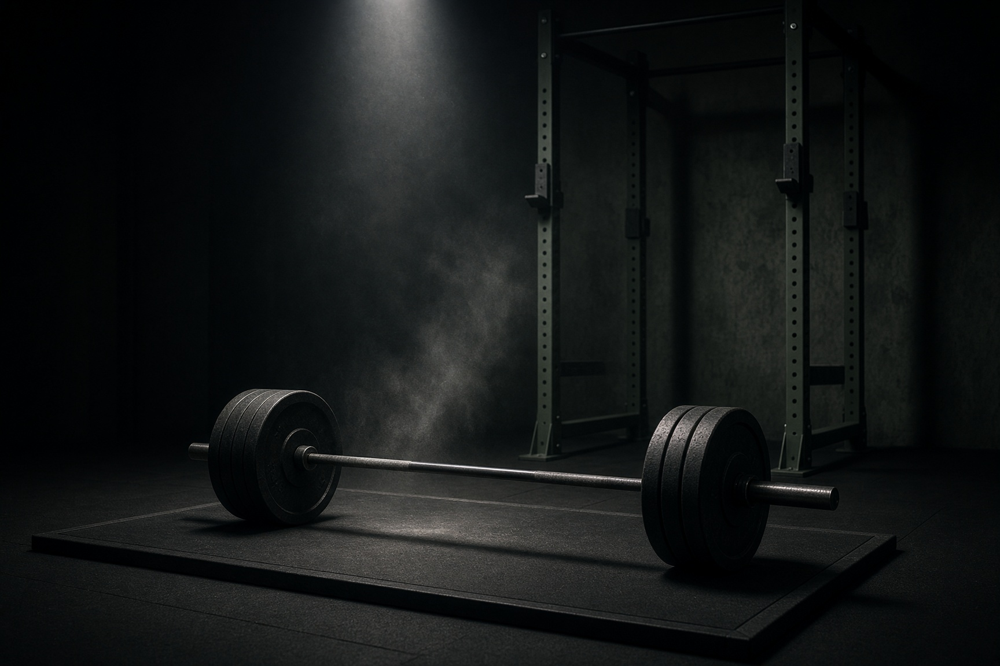

Show up tired
School does not wait for a perfect night of sleep. Training does not wait either. The standard is to do the work on ordinary days, not only on motivated ones.

Student portfolio · 2026
Class XI, section M1. Physics, Chemistry, Mathematics. A week split between a notebook, a hardwood floor, and a barbell.
01/About
I’m Rudra Priye, sixteen, in Class 11 section M1, studying PCM. This page is the version of an “about me” I actually recognise — not a list of adjectives, a record of how the week is spent.
School takes the morning. Physics numericals take the evening. Basketball takes whatever is left in the legs. Strength training is the unglamorous middle: chalk, a notebook of loads, and the decision not to skip just because a test is coming. I am not trying to be two different people. The same habits have to work in a classroom and in a gym.
I like problems with a clean answer. A free throw. A derivation. A lift done with a quiet back. The rest of life is noisier. Those three things keep the week honest.
Now
First year of senior secondary. Building a PCM foundation and earning minutes as a wing on the school side.
North star
Leave Class 12 with a body that holds up, a file of solved problems I can defend, and a game that still looks like mine.


02/Academics · PCM
I am not a prodigy. I am a student who treats the syllabus like a season: you do not skip training because the match is next month. You show up for the unglamorous units too.
Mechanics first
The subject that finally made basketball feel like a laboratory.
Class 11 physics is where I live most evenings. Kinematics, Newton’s laws, work-energy, and circular motion are not abstract to me — they are the language of a jump shot, a cut, a landing. I work NCERT line by line, then step into HC Verma for the problems that actually hurt. I keep a separate notebook for derivations so I can rebuild them from memory the next morning, the same way I rebuild a shooting form in an empty gym.
Structure before tricks
I used to treat chemistry as a memory subject. That was a mistake I am still undoing.
Physical chemistry is where I am most comfortable — mole concept, stoichiometry, states of matter, thermodynamics. Inorganic I drill with tables I rewrite myself; organic I am learning to see as patterns, not a pile of reactions. Lab work is the part I do not skip: if I cannot explain what the apparatus is doing, I do not count the experiment as done. The aim is not speed. It is to stop guessing.
Clean lines
Maths is the quietest hour of my day, and the most unforgiving.
Sets, relations, trigonometric identities, straight lines, conic sections, and the first stretch of limits and derivatives. I like problems that look short and are not. I time my practice sets the way I time shooting drills — a fixed number, a fixed window, no phone. Coordinate geometry is my favourite unit so far; calculus is the one I am trying to make as natural as a free throw routine.
03/Basketball
I play on the wing — shooting guard by label, cutter and closer by habit. I am not the tallest body in a zone. I am the one who wants the ball when the scoreboard is ugly. Catch-and-shoot from the corners, a growing weak-hand finish, and a free-throw routine I do not change even when the gym is loud.
Practice is not a highlight tape. Two hundred makes. Closeout footwork. Screens I used to bump instead of read. Film, when we have it, is more useful than praise. I keep a small book: shots taken, turnovers, how my legs felt in the third quarter. The point is not to look busy. It is to know what actually broke.
Competitions this year are house matches, a zonal invitational, and whatever inter-school friendlies the calendar gives us. I care less about the medal photograph than about whether I still make the simple play when I am tired.

04/Strength training
I started lifting because basketball made the gaps obvious: first step, landing, holding a box-out in the fourth quarter. The programme is four lifting days in a normal week, built around squats, hinges, presses, pull-ups, and carries. I add load slowly. I film the main lifts. If the bar path is ugly, the weight comes off. Size is not the goal. A body that still works in February is.
Warm-ups are not optional. Hips, ankles, T-spine, then empty-bar work. After the main set I do what the sport needs that week — split squats, calf raises, anti-rotation. I eat like a student who trains, which means I actually eat: protein at every meal, water that is not only during practice, sleep that I defend the night before a test as fiercely as the night before a match.

| Lift | Role | Note |
|---|---|---|
| Back squat | Primary lower | Depth and brace before adding plates |
| Romanian deadlift | Posterior chain | Hamstrings for sprinting and landing |
| Bench / floor press | Upper push | Controlled eccentrics, no bounce |
| Weighted pull-up | Upper pull | Strict reps; bands when needed |
| Split squat | Single-leg | Knee tracking, court-specific |
| Farmer carry | Trunk / grip | Long walks, quiet core |
School does not wait for a perfect night of sleep. Training does not wait either. The standard is to do the work on ordinary days, not only on motivated ones.
A sloppy squat is not training, it is a future injury. I film the main lifts when I can. If the bar path is ugly, the weight comes down.
One topic, one problem set, one review. I do not stack five chapters and call it a session. Depth beats a highlight reel of unfinished notes.
Sunday is not a void. Mobility, a long walk, cooking at home, rewriting the week. Rest is part of the programme, not a leak in it.
05/Competitions
School-level. Honest. Includes the papers I did not finish the way I wanted.
2026
School courts
Playing as a wing in section fixtures. Focus this year is decision-making in the last four minutes, not just scoring in the first.
2026
District venue
Short, physical games against teams we do not see every week. I keep a private sheet: turnovers, closeouts, and how my legs felt in the third quarter.
2025–26
School ground
Basketball exhibition plus a relay. Sports day is noisy; I treat it as a test of whether training holds when the crowd is louder than the whistle.
2025
Senior wing
A working model of projectile motion using a basketball release angle. Judges asked why the optimum is not 45° on a court. That conversation was the point.
2025
Class 10 into 11
Did not finish the paper the way I wanted. The useful part was the error log: geometry under time pressure is still a hole I am filling in Class 11.
2025
School gym
Pull-ups, a 2 km loop, and a farmer carry. I did not win the room. I did finish without changing the plan mid-event, which is the habit I actually wanted.
2024–25
School courts
Runners-up with the house side. First year I was trusted to run a set in the fourth quarter. That trust is the thing I am trying to deserve again.
06/A working week
This is a map, not a prison. Tests move practice. Matches move maths. The rule is that something still happens — a shorter session, not a vanished one.
| Day | Desk | Body |
|---|---|---|
| Mon | Physics — numericals + derivation rewrite | Upper strength · mobility |
| Tue | Mathematics — timed problem set | Team practice · shooting 200 makes |
| Wed | Chemistry — theory + exercises | Lower strength · posterior chain |
| Thu | Physics — mixed chapter review | Skill work: footwork, closeouts, free throws |
| Fri | PCM — weekly error log | Team scrimmage or conditioning |
| Sat | Maths / chemistry backlog | Full-body strength or match day |
| Sun | Notes, sleep, family | Walk, stretch, plan the next seven days |
07/A note
This is a school portfolio, not a public inbox. Messages stay on this device so I can show them in class or pass them along. If you know me from the court or from M1, say which.
The note is saved on this device. If you need a reply the same day, find me after last period or after practice.